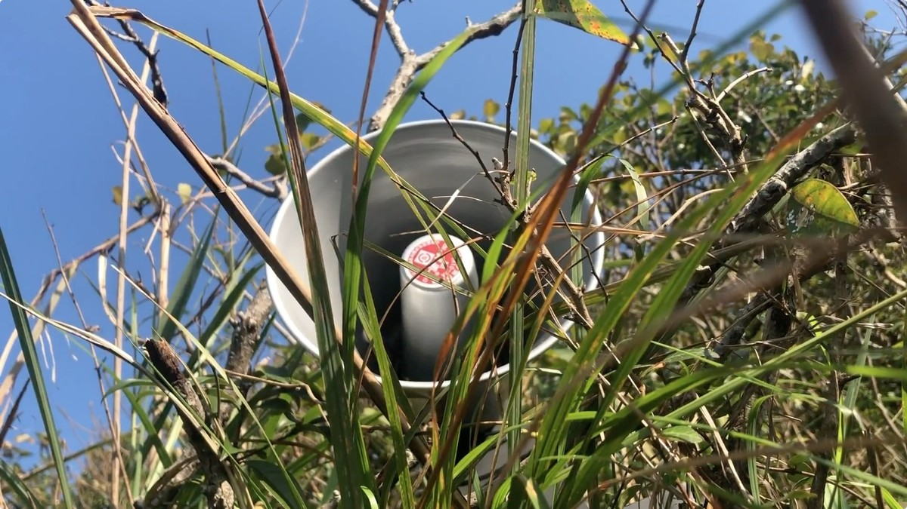
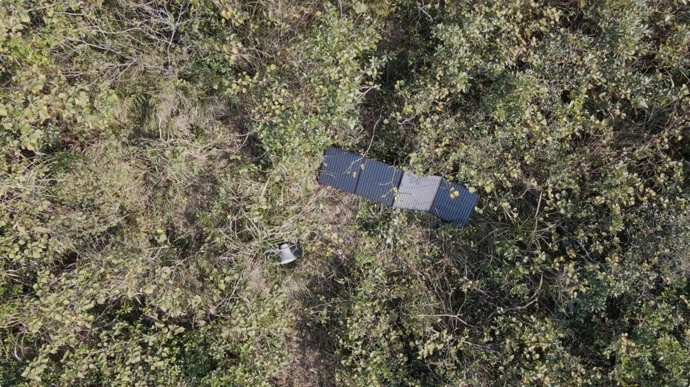
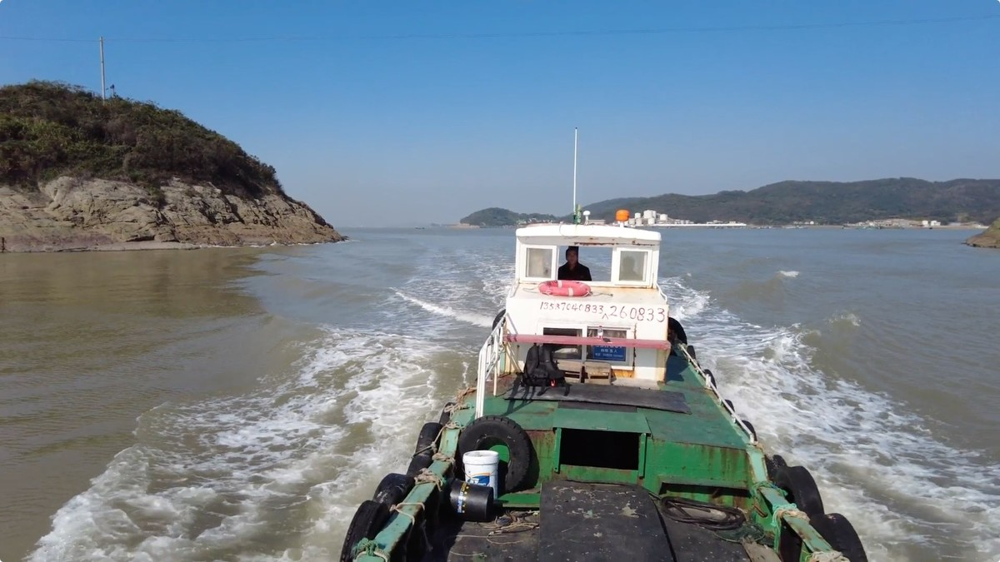
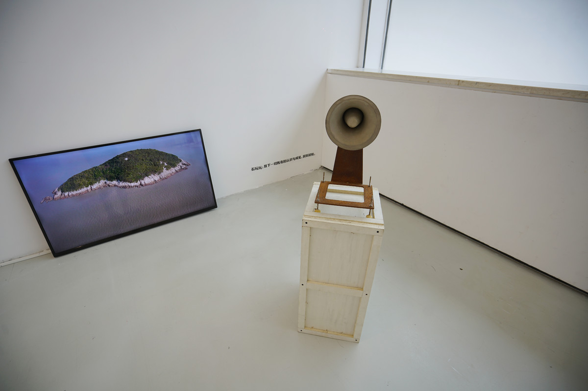

文明 | CHILDREN`S DIRTY WORDS ON AN UNINHABITED ISLAND

扩音器、声音控制器、变压器、光伏面板，162cm×92cm×51cm，2021
Amplifier, Sound controller, Transformer, photovoltaic panel, 162cm×92cm×51cm, 2021
我收集了将近100首“不文明的儿歌”，将它们带到大海里的一个无人荒岛里，随着日出与日落，永远的在山海间播放。
I collected nearly 100 nursery rhymes with dirty words and placed them on an uninhabited island in the middle of the ocean, playing them between the mountains and the sea for eternity with sunrise and sunset.
《文明》为2021年《画刊》杂志封面计划委托创作
The project commissioned artwork for 2021 Art Monthly Cover project

东海无人岛
Uninhabited Islands in east China Sea

东海无人岛
Uninhabited Islands in east China Sea

四川美术学院美术馆，重庆
Sichuan Fine Arts Institute Art Museum, Chongqing